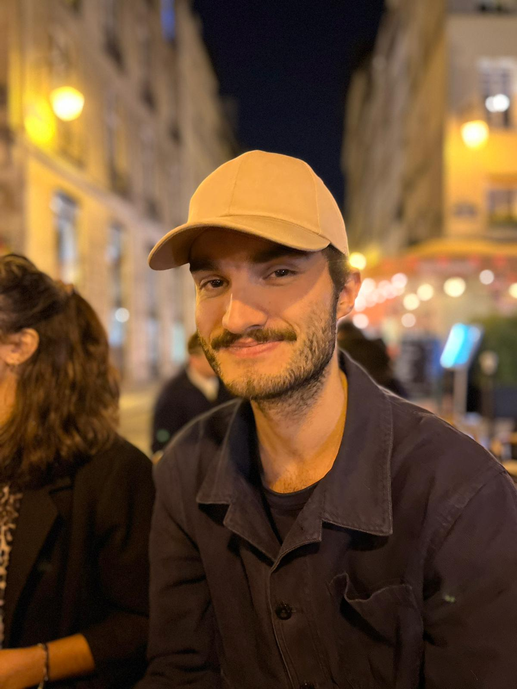

Pierre Barreteau
Business Analyst
06 58 16 72 99
barretep@gmail.com
Paris
Expériences Professionelles
Data Analyst
Logo Bouygues Télécom - RCBT
09/2021 - 11/2022
Paris
Direction Administrative & Financière - Pôle Performance
-
Créer et développer des reportings pour les différentes directions
-
Recueillir les besoins de data vizualisation
-
Accompagner la prise de décision opérationnelle et stratégique
-
Analyser les résultats des boutiques
-
Gestionnaire d'activité télévente
Logo Bouygues Télécom
10/2019 - 04/2021
Paris
Télévente Sortant - 2 Partenaires (Tunisie & Sénégal)
-
Développer et gérer les partenariats
-
Piloter et analyser la performance commerciale
-
Benchmarker le performances commerciales et qualités
-
Créer des formations à destination des partenaires
-
Accompagner le déploiement d'outils de ventes
-
Suivre le budget alloué aux partenaires
Stage Chef de Projet - Relation Client
Logo Bouygues Télécom
06/2018 - 12/2018
Nantes
Relation client
-
Garantir le fonctionnement et l'animation d'un outil d'aide à la vente utilise par les conseillers de clientèle
-
Suivre et analyser les performances de ventes
-
Créer et animer des formations liées à l'outil de vente
-
Contrôler la qualité des appels
-
Créer des supports d'aide à la connaissance des offres
Stage Assistant Chef de Pub
Logo Altavia
06/2017 - 09/2017
Nantes
Agence de communication
-
Assurer le suivi commercial des dossiers clients
-
Créer des briefs créatifs
-
Créer des supports vidéos tutotiels à destination des clients
Stage Assistant Développement Commercial
Logo ISEG Marketing & Communication School
10/2016 - 03/2017
Nantes
École de Markerting & Communication
-
Assurer le suivi commercial des dossiers clients
-
Créer des briefs créatifs
-
Créer des supports vidéos tutotiels à destination des clients
Formation
MSC in Marketing & Communication
Dublin Business School
01/2019 - 08/2019
Dublin
MBA Digital Manager
ISEG Marketing & Communication School
09/2014 - 12/2018
Nantes
Compétences
-
Analyse de données
-
SQL
-
TABLEAU
-
Communication
-
Négociation
-
Prise de décision
-
Certification Google Analytics
-
Certification Google Ads
-
Certification Inbound Marketing
-
Social Media Marketing
Langues
-
Français - échelle de point
-
Langue Natale
-
Anglais - échelle de point
-
Courant - TOEIC 920
Centres d'intérêt
Pratique du Handball pendant 10 ans
Ancien Président de l'association d'Oenologie et Zythologie "Ce qu'il y sous sa robe"
Nouvelles Technologies & Sciences